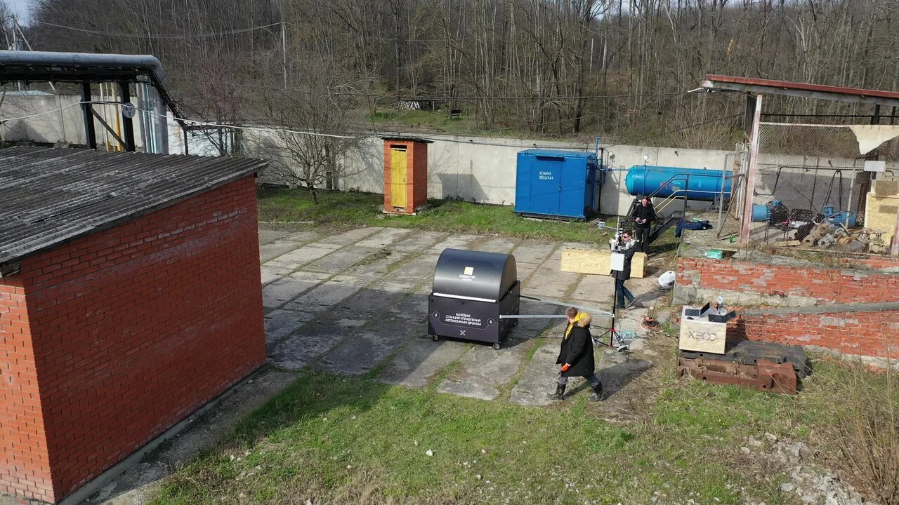
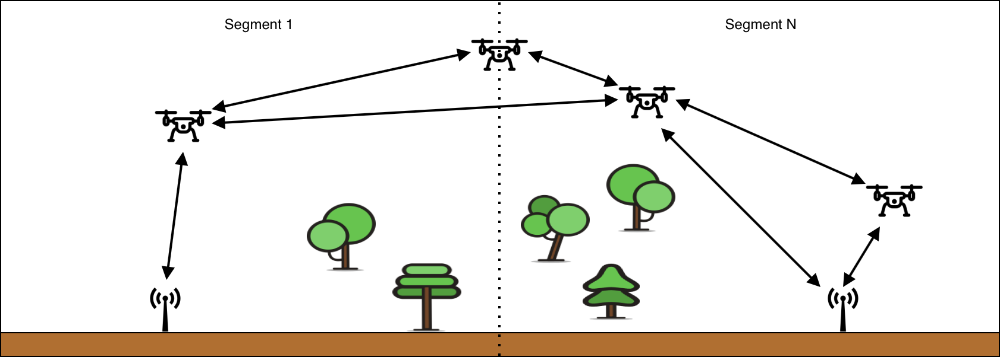
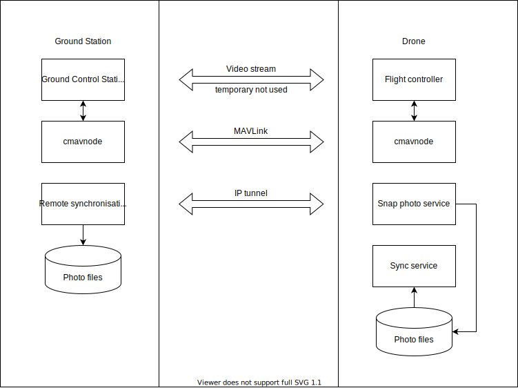

Programming, electronics, lifestyle
Система связи дрона и зарядной станции
Введение
Я начал писать эту статью в апреле 2020 года. Однако вместо изложения того, чем я занимался, я начал копать вглубь и пытаться объяснить себе как правильно должна выглядеть разработанная система во всех нюансах. Как итог, потратил кучу усилий, и понял, что обрекаю себя на научно-исследовательскую работу. И это немного не соответствует моей цели, а именно – закрепить все те знания, что я применял при разработке и внедрении робототехнических комплексов на прошлом месте работы.
Теперь немного предыстории. В 2017 году, сразу после окончания университета, я устроился в компанию КоптерЭкспресс, ту самую которая делала доставку Додо-пиццы дронами. Компания занимается производством автономных мультикоптеров и имеет два основных направления:
- образовательная робототехника – продукт обучающего конструктора Clover;
- промышленная робототехника тут у компании целый ряд наработок среди которых дрон Pelican с зарядной станцией.
В 2018 году я перешел работать в дочернюю компанию Роснефти – Сибинтек. Моей задачей было соединить и запустить решения КоптерЭкспресс и внутреннего отдела ML для создания автономного комплекса по мониторингу нефтяных разливов и охранному мониторингу (детекция людей и машин).
Полученный комплекс должен был стать коробочным автономным решением устанавливаемым на объект. Где по расписанию проводить облёт объекта и выдавать отчет о событиях сотрудникам службы безопасности.
Вместе с КоптерЭкспресс мы провели этап опытной эксплуатации под Горячим ключом в Краснодарском крае.

В 2019 году пришел этап апробации. Ввиду некоторых причин был выбран другой подрядчик – Тольяттинская компания Сокол. Это позволило обеспечить полный контроль применяемых средств, тк по сути всю разработку софта я вел самостоятельно.
Об одном из решений, которое было разработано и применено, а также выявленные проблемы и дальнейшие идеи о развитии и станут основным материалом этой статьи.
Постановка задач
В июне 2019 года мне сообщается, что у нас появился новый подрядчик и мне нужно ехать в командировку в Тольятти. Из интересного было то, что софт который был у компании совершенно не подходил под тот стек который мы собирались применять в наших решениях, что предполагало написание всего с нуля.
Для начала мы определили основные компоненты системы:
- дрон
- две камеры (ик-камера и цветная FullHD) на подвесе
- зарядная станция
- система связи (вышка с приёмопередатчиком, обычно комбинируемая с метеостанцией и RTK GPS Base)
- сервер видеоаналитики (ML)
- внешний сервер для связи удаленных сегментов (Нижневартовск и Краснодар)
Затем определили задачи по харду, а именно:
- собрать зарядные станции
- собрать дроны
- разработать наземный модуль системы связи
Основными нововведениями при сборке станций были необходимость разработки системы поддержания температуры – климат контроль, и добавление инфракрасной метки и сервера видеоаналитики со свичом. А стороны дрона это внедрение дальномера, сенсора для посадки на инфракрасную метку и подвеса с двумя камерами. Также встал вопрос о том как соединять все компоненты с точки зрения сети.
Задач по софту было больше, спасало то, что многое было уже реализовано. Вот основные задачи, которые стояли перед нами:
- научить дрон садиться на инфракрасную метку в режиме посадки в станцию
- научить дрон общаться со станцией (открывать, закрывать, проверять состояние)
- написать прошивку для зарядной станции и соединить это с остальными компонентами MAVLink системы
- разработать систему связи объединяющую дрон и зарядную станцию (обычный Wi-Fi не особо подходит)
- переделать драйвер для лазерного дальномера (поправить в нем ошибку с краевыми значениями расстояния)
- научиться делать много кадров с большой частотой с двух камер одновременно + производить трансляцию изображения в реальном времени, а также добавлять в контейнер изображений всю необходимую информацию в EXIF, управлять камерой с контроллера дрона
- настроить и соединить все компоненты друг с другом
- настроить на удаленном сервере VPN и организовать доступ к ней
- организовать передачу изображений с дрона на сервер видеоаналитики
На все у меня было 3 месяца, поэтому для помощи мне с задачами мы заключили договор с ещё одним специалистом, благодаря этому было:
- найдено и отлажено решение передачи изображений на сервер видеоаналитики;
- найдено решение для связи дрона и зарядной станции.
Собственно о втором решении для связи дрона с зарядной станцией и пойдет речь дальше. Я считаю это очень интересной технологией которая позволяет получить неплохие показатели по дальности и ёмкости передачи информации с помощью гражданских средств.
Система связи дрона и станции

Сегментом на диаграмме является некоторая территория ограниченная возможной дальностью полета дрона от зарядной станции (туда-обратно, примем, что оно константно - то-есть не зависит от внешних условий). Зарядная станция (ЗС) – робототехническое сооружение для автономной зарядки и сохранения дрона/дронов.
Зачастую, ввиду рельефа местности, используемого типа оборудования и высоты на которой устанавливается модуль связи, связь между ЗС и дроном меньше радиуса сегмента. Это обуславливается в первую очередь необходимостью прямой видимости. Например, в одном из наших первых тестов при нахождении модуля связи на высоте 2 метра, дальность сигнала достигала 400 метров; при расположении на высоте 30 метров – 1.6 км (в качестве полезной нагрузки передавалась HD картинка с битрейтом 30 кадров/сек).
Теперь нужно сделать замечание которое испортит весь кайф. Данная схема является желаемой и не была реализована. Различия заключаются в том, что в дронах нет ретрансляции сигнала и, соответственно, нет самоораганизуемой сети между всеми агентами (связь только до ближайших). Плюс даже, если два дрона летают рядом и они настроены на одну частоту передачи сигнала и ключи шифрования совпадают, то мы не использовали кейсы с их общением друг с другом.
Выбор канала передачи данных
Для того, чтобы определить какой канал передачи данных подойдет для использования, необходимо определить критерии для его организации. Начнем с типов передаваемых данных:
- Управляющие команды, телеметрия (MAVLink протокол).
- Видео-поток, например упакованный с помощью RTSP протокола. Не было использовано, однако в некоторых кейсах планировалось возможность прямой трансляции.
- IP-туннель (UDP протокол для работы по
SSHи всего остального. Также у нас поsftpпередавался отснятый на камеру материал).

Поскольку нам было нужно передавать такие тяжелые данные как отснятый материал или видео-стрим, первое что пришло на ум – обычный Wi-Fi (или по-другому семейство протоколов IEEE 802.11 Infrastructure Network) и мы взяли его за основу. Рассмотрим минусы при использовании этого семейства протоколов:
- Может неконтролируемо менять частоту, тип модуляции и ширину канала в зависимости от качества сигнала. В этой статье изложена теория модуляции и схемы кодирования –
MCS(Modulation and Coding Scheme). - Клиенты не могут связываться друг с другом напрямую (топология сети “звезда”).
- При передаче broadcast-сообщений сообщения в радио-канале дублируются для каждого клиента. (Например, в RTK GPS (ru.wikipedia.org, ardupilot.org), передача
RTCMсообщений от Base к нескольким Rover). Прочитать больше про типы трафика в IP сетях вы сможете здесь. - Также полагаю, что любой пересылаемый по радио-каналу пакет (даже
UDP) будет проходить процедуру гарантии доставки на канальном уровне IEEE 802.11 Infrastructure Networks. В случае передачи time-based команд или передачи потокового видео данная процедура будет вызывать задержки.- При потере пакета, нужно принимать следующий (тк время уже упущено).
- Если пакет передался с ошибкой, его нужно по возможности исправить или отбросить.
Исходя из этого мы решили, что будущая реализация протокола передачи данных должна сама настраивать адаптер на определенную частоту и видеть все пакеты, что есть в эфире (без авторизации), а также иметь возможность свободно отсылать собственные произвольные пакеты в эфир для чего можно перевести обычный Wi-Fi адаптер в режим Monitoring.
К сожалению, драйвера с данным режимом работы написаны и открыты не для всех чипсетов, в связи с чем задача свелась к выбору подходящего по характеристикам чипсета и драйвера написанного для него под ARM-архитектуру. Эта работа уже была проделана и применялась как на прошлой работе, так и в сообществе.
На момент написания статьи (29 августа 2019) самый распространенный Wi-Fi чипсет, обладающей достаточной мощностью, чувствительностью, распространенностью на гражданском бытовом рынке и поддержкой двух диапазонов сетей (2.4GHz и 5GHz) и, главное, свободно распространяемых драйверов являлся Realtek RTL8212AU.
На рынке представлено несколько неплохих с точки зрения реализации аппаратной части модемов на базе этого чипсета:
- ASUS USB-AC56
- netis WF2190
- Alpha AWUS036ACH
- Alpha AWUS036AC
В официальной сборке Raspbian OS версии February 2020 Wi-Fi драйвер при работе с чипсетом rtl8812au поддерживает только два режима: Client AP и AP (Access point). Поэтому для работы требуется другой драйвер, поддерживающего режим Monitoring, таких драйвером достаточно много и они выложены в открытом виде на Github:
- github.com/gnab/rtl8812au
- github.com/sloretz/rtl8811au
- github.com/abperiasamy/rtl8812AU_8821AU_linux
- github.com/svpcom/rtl8812au
- github.com/aircrack-ng/rtl8812au
Я остановился на последнем варианте от разработчиков утилит для пентеста беспроводных сетей – Aircrack-ng. Решение было проверено на теге v5.2.20.
Однако, строго следуя описанию из репозитория, собрать драйвер под Raspberry Pi не получится. Проблема описана в топике. Дело в том, что для сборки модуля ядра (динамически подгружаемого драйвера через modprobe) требуются заголовочные файлы ядра ОС, а изначально они отсутствуют в образе, вместо этого используются предкомпилированные файлы. Проблема заключается в том, что нужно достать заголовочники именно для вашей версии ядра, а для того чтобы утилита raspberrypi-kernel-headers содержала исходники новой версии ядра требуется время (обычно несколько недель). Поэтому предлагается собрать свое ядро и скопировать его вместе с исходниками, подробнее описано на raspberrypi.org.
Также вы можете найти другую полезную информацию о ядре Raspbian в основном разделе документации Raspberry Foundation о ядре, в тч про патчинг ядра, также скачать исходники ядра в официальном репозитории Raspberry Foundation.
Сначала я попробовал собрать ядро из оф документации RPi, но в итоге прервал и исполнил make prepare как было написано в этом топике. Затем я наткнулся на проекты @Hexxeh и @notro – эти проект содержат скрипты:
rpi-update(github) – для обновления файлов ядра (а точнее возможности установить предкомпилированное ядро определенных коммитов из форка официального репозитория Hexxeh/rpi-firmware и перемещаться между ними).rpi-source(github) - для установки исходных файлов в том числе заголовочных на текущую прошивку, из Hexxeh/rpi-firmware. Подробнее про эту утилиту написано в wiki на github.
Я обновил ядро с помощью rpi-update и обнаружил, что скрипт обновил ядро до 4.19.75-v7.
Затем я скачал исходники с помощью rpi-source и, сопоставив коммиты в официальной репе и в репозитории проекта Hexxeh, я нашел пару коммитов указывающих на версию ядра 4.19.75-v7, это был коммит pinctrl: bcm2835: Add support for BCM2711 pull-up functionality.
После чего можно собрать драйвер и установить его в систему, для этого я написал небольшой скрипт:
#! /usr/bin/env bash
set -e
# To get your kernel version use 'uname -r'
# Set this version in next variable
LINUX_HEADERS="4.19.97-v7+"
apt install -y \
git \
dkms \
build-essential \
bc \
libelf-dev \
linux-headers-${LINUX_HEADERS} \
&& echo "Everything was installed!" \
|| (echo "Some packages wasn't installed!"; exit 1)
cd /root
git clone https://github.com/aircrack-ng/rtl8812au -b v5.2.20
cd rtl8812au
wget "https://raw.githubusercontent.com/notro/rpi-source/master/rpi-source" -O /usr/bin/rpi-source
chmod 755 /usr/bin/rpi-source
# Check what MCU installed on your Raspberry Pi
# PROCESSOR_TYPES_NAMES = [1='BCM2835', 2='BCM2836', 3='BCM2837', 4='BCM2711']
rpi-source --processor 3
sed -i 's/CONFIG_PLATFORM_I386_PC = y/CONFIG_PLATFORM_I386_PC = n/g' Makefile
sed -i 's/CONFIG_PLATFORM_ARM64_RPI = n/CONFIG_PLATFORM_ARM64_RPI = y/g' Makefile
make
make install
./dkms-install.sh
Для увеличения мощности передатчика (использования максимальной возможной мощности) есть ряд инструкций, также описанных Василием Евсеенко. И следующая команда:
sudo iw wlan1 set txpower fixed 4000
Wi-Fi broadcast
После выбора модема и установки драйвера, необходимо реализовать передачу данных. Для этого необходим некоторый софт. Который бы работал модемом и позволял кодировать и шифровать передаваемую информацию, а также предоставлял некоторый интерфейс для работы с данными. Есть несколько проектов для дронов включающих в себя еще и драйвер. Обычно они поставляются как образ для Raspberry Pi:
Однако все эти решения заточены:
- Под использование преднастроенного образа с их софтом. Что не подходит по концепции поставки приложения.
- Для передачи MAVLink телеметрии, видео-потока, что не может не огорчать, ведь область применения этой технологии мб куда шире, например передача файлов или подключение по SSH к удаленной системе. Необходим некоторый уровень абстракции – реализация UDP.
Позже был найден проект – svpcom/wifibroadcast, предлагаю с ним и ознакомиться. Также он описан в проекте dev.px4.io – Long-distance Video Streaming.
svpcom/wifibroadcast (WFB) – реализация ПО для передачи UDP, MAVLink, RTP пакетов с использованием Wi-Fi адаптеров. Данные с endpoint'ов поступают в виде байтового потока, затем шифруются с помощью библиотеки libsodium и передаются с использованием алгоритма корректировки ошибок FEC (forward error correction).
Для каждого endpoint'а используется отдельные настройки FEC. Эти настройки подбираются исходя из приоритета скорости передачи данных над надежностью передачи данных. Также для каждого endpoint'а может использоваться как двухсторонний канал связи так и односторонний (например используемый при передачи RTP пакетов). Подробную информацию можно найти в этой ветке обсуждения.
Wiki по сборке и настройки WFB:
- https://github.com/svpcom/wifibroadcast/wiki/Install-from-scratch
- https://github.com/svpcom/wifibroadcast/wiki/Setup-HOWTO
Архитектура сети комплекса
На этом этапе мы решили задачу по передачи информации между дроном и зарядной станцией. Далее необходимо построить спроектировать и настроить сеть связующую все части комплекса.
Для начала стоит сказать, что мы решили вынести из станции телекоммуникационный модуль – что-то вроде домашнего роутера, только еще с поддержкой WFB и cmavnode на борту. cmavnode – программа для маршрутизации MAVLink сообщений поверх UDP.

На схеме не отображены не значимые преобразователи напряжения, разъёмы и антенны. Также на схеме отсутствует используемый на дронах вспомогательный контроллер для обработки изображений со второй камеры, тк при испытаниях оказалось, что драйвер V4L2 не поддерживает одновременный видео-захват с двух USB камер.
Все сети я разделю на несколько групп:
Сервисная сеть– локальная сеть которая объединяет наземные компоненты: зарядная станция, сервер видеоаналитики, телекоммуникационный модуль. Также к этой сети можно подключить оператора с ПК и получить доступ к дронам черезIPoverWFB. Роутером данной сети является телекоммуникационный модуль. Данная сеть может быть развернута с помощью витой пары, Wi-Fi, оптического канала (через конвертор подключенный к Ethernet порту Raspberry Pi (пропускная способность которого будет варьироваться в зависимости от версии RPi)). В нашем случае на телекоммуникационном модуле Wi-Fi интерфейс был объединен с Ethernet. Это удобно при отладке тк можно подключиться к сети с ноутбука находясь рядом.Внешние сети– это сети которые работают через сети интернет или интранет, в стандартном варианте это интернет + удаленный доступ к VPN сети объединяющей сегменты и предоставляющей удаленный доступ.Радио-сеть– это сеть связывающая дрон и телекоммуникационный модуль.Внутри-локальные сеть– к ним относится единственная сеть для работы сloopback. Такая сеть есть на каждом узле тк является стандартной и зачастую нужна для функционирования внутренних сервисов.
В пример приведу как устроена настройка сетевых интерфейсов на телекоммуникационном модуле, я думаю это будет неплохим примером, тк по аналогии настроена сеть на всех остальных устройствах.
| Интерфейс | Описание | Адресация |
|---|---|---|
| lo | Виртуальный сетевой интерфейс для loopback | 127.0.0.1/32 |
| eth0 | Встроенный Ethernet интерфейс, используемый в сервисной сети | None |
| wlan0 | Встроенный Wi-Fi интерфейс, используемый в сервисной сети (мб выключен на продакшен системах) | None |
| br0 | Мост между интерфейсами используемый для организации сервисной сети (интерфейсы 2 и 3) | 192.168.11.0/24 |
| wlan1 | Внешний Wi-Fi адаптер на базе RTL8812AU используемый WFB |
None |
| gs-wfb | IPoverWFB развернутый с помощью WFB |
10.5.0.2/32 |
| eth1 | LTE модем подключенный через USB и определяемый как сетевое устройство (также сам раздает адресацию) | 192.168.1.100/24 (хотя тут всего два адреса) |
| tun0 | IP-туннель на удаленный сервер для связи сегментов сети через VPN | 192.168.255.0/24 |
Для создания такой архитектуры мы использовали следующие пакеты: hostapd, dnsmasq, bridge-utils, openvpn.
Также мы отказались от использования штатных средств организации сети на Raspberry Pi OS, в сторону утилиты ifupdown (/etc/network/interfaces):
# interfaces(5) file used by ifup(8) and ifdown(8)
# Include files from /etc/network/interfaces.d:
source-directory /etc/network/interfaces.d
auto lo
iface lo inet loopback
# It doesn't work
# pre-up sh -c `echo 1 > /proc/sys/net/ipv4/ip_forward`
auto eth0
allow-hotplug eth0
iface eth0 inet manual
auto wlan0
allow-hotplug wlan0
iface wlan0 inet manual
auto br0
iface br0 inet static
address 192.168.11.1
netmask 255.255.255.0
gateway 192.168.11.1
# wlan0 is not needed because use bridge=wlan0 in /etc/hostapd/hostapd.conf
bridge_ports eth0
# post-up ip addr flush dev br0
# pre-up ip addr flush dev br0
# post-up iptables -A FORWARD -i br0 -o eth1 -j ACCEPT
# post-up iptables -A FORWARD -i eth1 -o br0 -j ACCEPT
# post-up iptables -A POSTROUTING -o eth1 -t nat -j MASQERADE
# LTE modem
auto eth1
allow-hotplug eth1
iface eth1 inet dhcp
post-up sh -c "echo 1 > /proc/sys/net/ipv4/ip_forward"
post-up iptables -A FORWARD -i br0 -o eth1 -j ACCEPT
post-up iptables -A FORWARD -i eth1 -o br0 -j ACCEPT
post-up iptables -A POSTROUTING -o eth1 -t nat -j MASQUERADE
auto wlan1
allow-hotplug wlan1
iface wlan1 inet manual
auto gs-wfb
iface gs-wfb inet manual
post-up sh -c "echo 1 > /proc/sys/net/ipv4/ip_forward"
# Access to local network
post-up iptables -A FORWARD -i gs-wfb -o br0 -j ACCEPT
post-up iptables -A FORWARD -i br0 -o gs-wfb -j ACCEPT
# post-up ip route add 192.168.12.0/24 via 10.5.0.2
# Access to internet
post-up iptables -A FORWARD -i gs-wfb -o eth1 -j ACCEPT
post-up iptables -A FORWARD -i eth1 -o gs-wfb -j ACCEPT
post-up iptables -A POSTROUTING -o gs-wfb -t nat -j MASQUERADE
# Actions on a drone
# post-up route add default gw 10.5.0.1 drone-wfb
# post-up ip route add default via 10.5.0.1
# post-up ip route add 192.168.11.0/24 via 10.5.0.1
auto tun0
iface tun0 inet manual
pre-up route del -net 0.0.0.0/1
pre-up route del -net 128.0.0.0/1
pre-up route del -host 255.255.255.0
О причинах выбора такого способа настройки сети вы можете найти информацию в моей отдельной статье – Устройство сети в Linux. А исходный код конфигурационных файлов dnsmasq, hostapd можете найти в моём проекте по сборке преднастроенных ОС – img-builder.
Замечание которое нужно сделать, это чтобы использовать встроенный DNS сервер на телекоммуникационном модуле, нужно добавить следующую запись в файл /etc/resolv.conf:
nameserver 192.168.11.1
На остальных устройствах сервисной сети эта запись будет проставляться автоматически DHCP клиентом от DHCP сервера, которым помимо прочего является dnsmasq.
Также я должен сказать о нескольких странных ошибках, которые пока не удалось решить:
Ошибка при использовании моста
При использовании моста возникают такого рода ошибки. Они не влияют на работоспособность. И остаются при перезапуске службы networking.
failed to bring up br0
ifup: failed to bring up br0
rtnetlink answers: file exist
Описание ошибки в других источниках:
Создание лишнего маршрута
root@nanopim4:/home/john# ip route show
default via 10.5.0.1 dev drone-wfb
10.5.0.0/24 dev drone-wfb proto kernel scope link src 10.5.0.2
**169.254.0.0/16 dev drone-wfb scope link metric 1000**
192.168.11.0/24 via 10.5.0.1 dev drone-wfb
Дальнейшее развитие системы связи
Дальнейшее развитие системы связи мне видится в сторону создания одноранговой самоораганизуемой сети с динамической адресацией. Интересными примерами служат cjdns и yggdrasil.